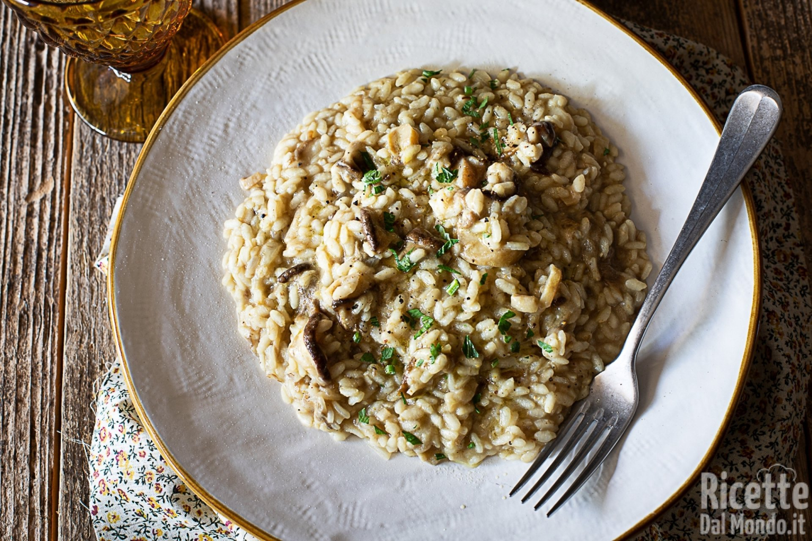

Ingredients:
- 1 1/2 cups Arborio rice
- 1/2 cup dry white wine
- 4 cups chicken or vegetable broth, heated
- 1 cup mixed mushrooms (such as cremini, shiitake, and oyster), sliced
- 1 small onion, finely chopped
- 2 cloves garlic, minced
- 1/2 cup Parmesan cheese, grated
- 2 tablespoons butter
- 2 tablespoons olive oil
- Salt and pepper to taste
- Fresh parsley for garnish
Cooking Instructions:
- In a large pan, heat olive oil over medium heat. Add chopped onion and garlic, sauté until softened.
- Add sliced mushrooms to the pan and cook until they release their moisture and become golden brown.
- Stir in Arborio rice and cook for 2-3 minutes until the rice is lightly toasted.
- Pour in the white wine and cook until it is mostly absorbed by the rice.
- Begin adding the heated broth one ladle at a time, stirring frequently. Allow the liquid to be absorbed before adding the next ladle of broth.
- Continue this process until the rice is creamy and cooked to al dente, about 18-20 minutes.
- Stir in grated Parmesan cheese and butter. Season with salt and pepper to taste.
- Remove from heat and let it rest for a few minutes before serving.
- Garnish with fresh parsley and serve Risotto ai Funghi hot.